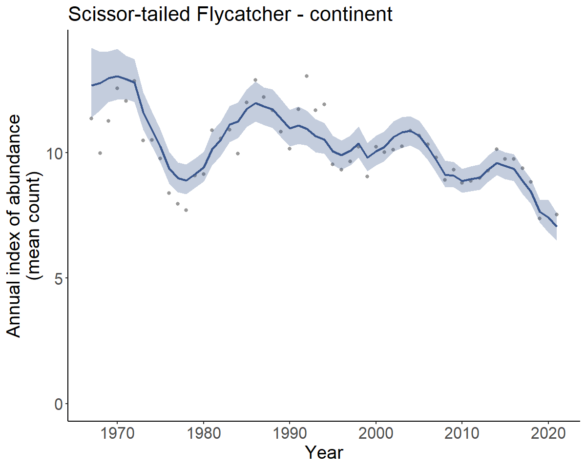

Welcome!
bbsBayes2 is the successor to bbsBayes, with a major shift in functionality. The MCMC backend is now Stan instead of JAGS, the workflow has been streamlined, the syntax has changed, and there are new functions. This vignette should help you get started with the package, and there are three others that should help explain some of the new features, choices, and more advanced uses:
Stratification vignette The stratification vignette explains the built-in options for spatial stratifications as well as the workflow required to apply a custom stratification.
Models vignette The models vignette explains the four built-in models that differ in the way the temporal components are structured, and it also covers the built-in options for error distributions and the differences among the model variants (e.g.,
model_variant = "spatial").Advanced vignette The advanced vignette is helpful for users wanting to take the bbsBayes2 functionality further, including alternate calculations of population trend, customizing the Stan models, adding covariates, and even some experimental functions that allow for k-fold cross-validations and approximate leave-one-out calculations to compare fit and predictive accuracy among models.
First we’ll make sure we have the right software installed, we’ll fetch the BBS survey data, and then we’ll run through some example workflows.
Install bbsbayes2
If you haven’t already, install bbsBayes2 from the R-Universe.
install.packages("bbsBayes2", repos = c(bbsbayes = "https://bbsbayes.r-universe.dev",
CRAN = getOption("repos")))Note that due to non-CRAN dependencies, bbsBayes2 is not available on CRAN and must be installed from GitHub or the R-Universe.
Install cmdstanr
Because bbsBayes2 uses Stan to run the Bayesian models, we need to make sure we have cmdstanr and cmdstan both installed.
Run this in a fresh R session.
install.packages("cmdstanr", repos = c("https://mc-stan.org/r-packages/",
getOption("repos")))Now we should be able to use cmdstanr to install cmdstan
cmdstanr::install_cmdstan()Let’s check that everything went as planned
cmdstanr::check_cmdstan_toolchain()
#> The C++ toolchain required for CmdStan is setup properly!Problems? Check out cmdstanr’s vignette on Getting Started
Special note for Windows users
We strongly recommend that you install Linux on your Windows machine
and take advantage of cmdstanr functions that run
Stan models in Linux. This will likely cut the MCMC
run-times by 30-50% for the bbsBayes2 models. Installing Windows
Subsystem for Linux (WSL) is a small hassle, but only needs to be
done once. Follow the directions at the above link.
Once the WSL installation is complete, re-install
cmdstan using
cmdstanr::install_cmdstan(overwrite = TRUE, wsl = TRUE).
Now, everytime you run a model using cmdstan (and therefore
anytime you run a model using bbsBayes2), it will use the
Linux installation to run Stan. It’s seamless and you’ll be very
thankful you did it once it’s done.
Download BBS data
Now we’ll fetch the BBS data using the fetch_bbs_data()
function.
This will save the data to a package-specific directory on your
computer. You must agree to the terms and conditions of the data usage
before the download will run (type yes at the prompt). The
message also includes the key metadata for the dataset, including the
citation, acknowledgements, and the release-version (below). You only
need run this function once for each annual update of the BBS database
(these updates usually occur in the summer, approximately 1-year
following the data collection).
Note: Most bbsBayes2 functionality can be explored without downloading BBS data by using the included sample data. Specify
sample_data = TRUEin the firststratify()step (see the next section).
There are (as of June 2023) two types of BBS data that can be downloaded, and two release-versions:
- Two levels
stateandstop(onlystateworks with bbsBayes2 models, thestopoption is provided to facilitate custom projects and models) - Two releases
2020and2022(more options will be added as annual releases occur)
The defaults (level state and the most recent release)
is almost certainly what you are looking for, Unless you have a specific
reason to need a different version. The most recent release will include
all of the data included in earlier releases. However you can download
all data sets and specify which one you wish to use in the
stratify() step.
A note about BBS release names:
The releases are named for the year in which the annual dataset was
released after going through QA-QC. So the 2022 release
contains all surveys conducted up to and including the 2021 field
season. There is no release = 2021, because the BBS was
cancelled during the COVID lockdowns of spring 2020 so no data were
collected and there was no updated data to release the following
year.
fetch_bbs_data() # Default
fetch_bbs_data(release = "2020") # Specify a different releaseWorkflow overview
We can visualize the bbsBayes2 workflow with this flow chart of functions.
The functions are colour coded by category:
- BBS Data - Blue
- Data Prep - Pink
- Modelling - Green
- Exploring model trends and indices - Purple
- General helper functions - Orange
Functions which are connected by a solid, black
arrow, indicate that the output of the first function is required as
input to the second. For example, the output of stratify()
is required input for prepare_data().
Functions which are connected by a solid, grey
arrow, indicate that the output of the first function is
optional input to the second. For example, the output of
grenerate_trends() is an option input for
plot_geofacet().
Functions which are connected by a dotted arrow
indicate that the first function can be used to create input for the
second, but not necessarily directly. For example,
fetch_bbs_data() downloads BBS data which is used by
stratify(), but it isn’t an input. Alternatively,
load_map() can load a spatial data file for a specific
stratification which can be modified by the user and then used as input
to prepare_spatial() or
generate_indices().
See the Function Reference for more details on how to use a particular function.

Workflow to fit models
Note: If you would prefer to skip the model-fitting process for now, skip down to Workflow to explore the model outputs.
Now that you have cmdstanr installed and the BBS data downloaded, we’ll walk through a general workflow for modelling species trends with bbsBayes2.
Stratify the data
The first step in any bbsBayes2 analysis is to stratify the data. In this step we choose a stratification type as well as a species to explore.
s <- stratify(by = "bbs_usgs", species = "Scissor-tailed Flycatcher")
#> Using 'bbs_usgs' (standard) stratification
#> Loading BBS data...
#> Filtering to species Scissor-tailed Flycatcher (4430)
#> Stratifying data...
#> Renaming routes...We can also play around with the included sample data (Pacific Wrens)
s <- stratify(by = "bbs_cws", sample_data = TRUE) # Only Pacific Wren
#> Using 'bbs_cws' (standard) stratification
#> Using sample BBS data...
#> Using species Pacific Wren (sample data)
#> Stratifying data...
#> Combining BCR 7 and NS and PEI...
#> Renaming routes...Stratifications included in bbsBayes2 are bbs_usgs, bbs_cws, bcr, latlong, prov_state. See the article on stratifications for more details and examples.
Species names in bbsBayes2
Let’s first take a brief step out of the workflow to explain important information about species names in bbsBayes2.
All of the models in the package are species-specific. So the species
is a fundamental aspect of any analysis. The
search_species() function allows the user to search up the
species names in the BBS database, using text from the English, Spanish,
French, or Latin names. The English names for each species will be
retained in the metadata at every step of the workflow.
search_species("Geai bleu")
#> # A tibble: 1 × 9
#> aou english french spanish order family genus species unid_combined
#> <dbl> <chr> <chr> <chr> <chr> <chr> <chr> <chr> <lgl>
#> 1 4770 Blue Jay Geai bleu Cyanocitta cristata Passeriformes Corvidae Cyanoci… crista… TRUE
search_species("Cyanocitta")
#> # A tibble: 2 × 9
#> aou english french spanish order family genus species unid_combined
#> <dbl> <chr> <chr> <chr> <chr> <chr> <chr> <chr> <lgl>
#> 1 4780 Steller's Jay Geai de Steller Cyanocitta stelleri Passer… Corvi… Cyan… stelle… TRUE
#> 2 4770 Blue Jay Geai bleu Cyanocitta cristata Passer… Corvi… Cyan… crista… TRUE
search_species("Corvidae")
#> # A tibble: 22 × 9
#> aou english french spanish order family genus species unid_combined
#> <dbl> <chr> <chr> <chr> <chr> <chr> <chr> <chr> <lgl>
#> 1 4840 Canada Jay Mésan… Periso… Pass… Corvi… Peri… canade… TRUE
#> 2 4830 Green Jay Geai … Cyanoc… Pass… Corvi… Cyan… yncas TRUE
#> 3 4920 Pinyon Jay Geai … Gymnor… Pass… Corvi… Gymn… cyanoc… TRUE
#> 4 4780 Steller's Jay Geai … Cyanoc… Pass… Corvi… Cyan… stelle… TRUE
#> 5 4770 Blue Jay Geai … Cyanoc… Pass… Corvi… Cyan… crista… TRUE
#> 6 4790 Florida Scrub-Jay Geai … Aphelo… Pass… Corvi… Aphe… coerul… TRUE
#> 7 4811 Island Scrub-Jay Geai … Aphelo… Pass… Corvi… Aphe… insula… TRUE
#> 8 4812 California Scrub-Jay Geai … Aphelo… Pass… Corvi… Aphe… califo… TRUE
#> 9 4813 Woodhouse's Scrub-Jay Geai … Aphelo… Pass… Corvi… Aphe… woodho… TRUE
#> 10 4810 unid. California Scrub-Jay / Woodh… unid … Aphelo… Pass… Corvi… Aphe… califo… TRUE
#> # ℹ 12 more rowsSpecies groupings
There are some taxonomic groupings of species-units in the BBS database that bbsBayes2 by default also combines into combined species forms. These represent groupings that make sense based on changes in taxonomy or potentially inconsistent distinctions among observers, routes, regions, or time.
- There are groupings that represent species considered distinct in the early portion of the BBS history that have been lumped into a single species at some point since then. For example, the Northern Flicker observations exist in the BBS database separately as Red-shafted Flicker (4130), Yellow-shafted Flicker (4120), unidentified Red/Yellow-shafted Flicker (4123) or hybrid Red x Yellow-shafted Flicker (4125). To provide an appropriate dataset to represent population trends of Northern Flicker, bbsBayes2 by default sums all of these observations into a new species called Northern Flicker (all forms), which replaces the (4123) unidentified category in the species database. The remaining original separate forms (Red, Yellow, and hybrid) are retained.
- Similar combined species are created for taxonomic splits that have occurred since the start of the BBS, such as Clark’s and Western Grebe, which are retained as their own separate species, but are also combined into Western Grebe (Clark’s/Western) (12).
You can access a complete list of these combined species groups and the sub groups that make them up.
species_forms
#> aou_unid english_original
#> 1 2973 unid. Dusky Grouse / Sooty Grouse
#> 2 5677 (unid. race) Dark-eyed Junco
#> 3 4123 (unid. Red/Yellow Shafted) Northern Flicker
#> 4 5077 unid. Bullock's Oriole / Baltimore Oriole
#> 5 3370 Red-tailed Hawk
#> 6 4022 unid. sapsucker
#> 7 1690 Snow Goose
#> 8 6295 unid. Cassin's Vireo / Blue-headed Vireo
#> 9 4665 unid. Alder Flycatcher / Willow Flycatcher
#> 10 4642 unid. Cordilleran / Pacific-slope Flycatcher
#> 11 12 unid. Western Grebe / Clark's Grebe
#> 12 6556 (unid. Myrtle/Audubon's) Yellow-rumped Warbler
#> 13 5275 unid. Common Redpoll / Hoary Redpoll
#> english_combined
#> 1 Blue Grouse (Dusky/Sooty)
#> 2 Dark-eyed Junco (all forms)
#> 3 Northern Flicker (all forms)
#> 4 Northern Oriole (Bullock's/Baltimore)
#> 5 Red-tailed Hawk (all forms)
#> 6 Sapsuckers (Yellow-bellied/Red-naped/Red-breasted/Williamson's)
#> 7 Snow Goose (all forms)
#> 8 Solitary Vireo (Blue-headed/Cassin's)
#> 9 Traill's Flycatcher (Alder/Willow)
#> 10 Western Flycatcher (Cordilleran/Pacific-slope)
#> 11 Western Grebe (Clark's/Western)
#> 12 Yellow-rumped Warbler (all forms)
#> 13 Redpoll (Common/Hoary)
#> french_combined aou_id
#> 1 Tétras sombre (sombre/fuligineux) 2970, 2971
#> 2 Junco ardoisé (toutes les formes) 5671, 5670, 5680, 5660, 5690
#> 3 Pic flamboyant (toutes les formes) 4125, 4120, 4130
#> 4 Oriole du Nord (de Bullock/de Baltimore) 5080, 5070, 5078
#> 5 Buse à queue rousse (toutes les formes) 3380
#> 6 Pics buveur de sève (maculé/à nuque rouge/à poitrine rouge) 4020, 4021, 4031, 4032
#> 7 Oie des neiges (toutes les formes) 1691
#> 8 Viréo à tête bleue (à tête bleue/de Cassin) 6292, 6291, 6290
#> 9 Moucherolle de Traill (des aulnes/ des saules) 4661, 4660
#> 10 Moucherolle côtier (des ravins/ côtier) 4641, 4640
#> 11 Grèbe élégant (à face blanche/élégant) 10, 11
#> 12 Paruline à croupion jaune (toutes les formes) 6550, 6560
#> 13 Sizerin (Flammé/Blanchâtre) 5270, 5280If you’re looking for a complete list of all species in the BBS database.
all_species_bbs_database <- load_bbs_data()$speciesNote: Because models can take hours to days to run, if you’re exploring the package functionality, we recommend using species with relatively small ranges (i.e., relatively few data) such as the Hepatic Tanager, Pacific Wren, or Scissor-tailed Flycatcher.
Prepare the data
Once we have stratified the data, we can now prepare it for use in a
model. In this step data will be filtered to omit routes with too few
samples, etc. See prepare_data() for more details on how
you can customize this step.
p <- prepare_data(s)Prepare the model
Next we will prepare the model parameters and initialization values.
See prepare_model() for more details on how you can
customize this step.
md <- prepare_model(p, model = "first_diff")Run model
Now we can run the model.
The default iter_sampling and iter_warmup
are 1000 and the default chains is 4. In the interest of
speed for this example, we are using much lower values, but note that
this almost certainly will result in problems with our model.
m <- run_model(md, iter_sampling = 100, iter_warmup = 500, chains = 2)Additional steps for spatial models
For spatial models there are two additional steps. You stratify and prepare the data as in the previous example, but you also prepare the map and the spatial data. An example is below.
s <- stratify(by = "bbs_usgs", species="Scissor-tailed Flycatcher")
#> Using 'bbs_usgs' (standard) stratification
#> Loading BBS data...
#> Filtering to species Scissor-tailed Flycatcher (4430)
#> Stratifying data...
#> Renaming routes...
p <- prepare_data(s)And now the additional steps…
# Load a map
map <- load_map(stratify_by = "bbs_usgs")
# Prepare the spatial data
sp <- prepare_spatial(p, map)
#> Preparing spatial data...
#> Identifying neighbours (non-Voronoi method)...
#> The legacy packages maptools, rgdal, and rgeos, underpinning the sp package,
#> which was just loaded, will retire in October 2023.
#> Please refer to R-spatial evolution reports for details, especially
#> https://r-spatial.org/r/2023/05/15/evolution4.html.
#> It may be desirable to make the sf package available;
#> package maintainers should consider adding sf to Suggests:.
#> The sp package is now running under evolution status 2
#> (status 2 uses the sf package in place of rgdal)
#> Formating neighbourhood matrices...
#> Plotting neighbourhood matrices...Then the remaining steps are the same but we use
model_variant = "spatial" in
prepare_model().
# Then prepare the model with the spatial output
mod <- prepare_model(sp, model = "gamye", model_variant = "spatial")
# Then run the model as before
m <- run_model(mod)
# Optionally, save the model output as an .rds file
saveRDS(m, "output/4430_gamye_spatial.rds")The spatial aspects of the spatial model variants use an intrinsic Conditional Autoregressive structure (iCAR) to share information among neighbouring strata on the population abundance and trend parameter (Besag et al. 1991, ver Hoef et al. 2018, Morris et al. 2019). For more information about the bbsBayes2 models and the spatial models see the models vignette and Smith et al., 2023 pre-print.
The prepared spatial data object includes a map of the spatial neighbourhood relationships for a given species and stratification.
print(sp$spatial_data$map)Workflow to explore the model outputs
If you would prefer to skip the model fitting steps for now, you can
download
a fitted model object (the output of run_model()
function) and test out the remaining package features.
The outputs of the collection of functions required to fit a model
are cumulative: each one retains the metadata from the previous step. As
a result, the saved object from the run_model() function is
a large list that includes the cmdstanr posterior samples
object from the model fitting process, as well as all of the data and
metadata necessary to understand and replicate the choices made to fit
the model.
m <- readRDS("output/4430_gamye_spatial.rds")
names(m)
#> [1] "model_fit" "model_data" "meta_data" "meta_strata" "raw_data"Convergence and parameter summaries
First, we will investigate the model convergence and the parameter
estimates of the model. There are two key helper functions in
bbsBayes2 that provide information on model convergence:
get_convergence() calculates convergence diagnostics and
get_summary() calculates the convergence diagnostics as
well as summary statistics (mean, median, credible intervals) for all
parameters in a fitted model.
# Convergence diagnostics for all parameters
converge <- get_convergence(m)
# Convergence diagnostics for all smoothed annual indices
converge_n_smooth <- get_convergence(m, variables = "n_smooth") %>%
arrange(-rhat)
converge_n_smooth
#> # A tibble: 1,375 × 5
#> variable_type variable rhat ess_bulk ess_tail
#> <chr> <chr> <dbl> <dbl> <dbl>
#> 1 n_smooth n_smooth[7,26] 1.00 5383. 3686.
#> 2 n_smooth n_smooth[7,25] 1.00 5384. 3618.
#> 3 n_smooth n_smooth[7,28] 1.00 5325. 3745.
#> 4 n_smooth n_smooth[7,24] 1.00 5137. 3545.
#> 5 n_smooth n_smooth[7,23] 1.00 5053. 3197.
#> 6 n_smooth n_smooth[9,35] 1.00 4546. 3433.
#> 7 n_smooth n_smooth[7,27] 1.00 5348. 3780.
#> 8 n_smooth n_smooth[12,54] 1.00 4279. 3348.
#> 9 n_smooth n_smooth[14,10] 1.00 4870. 3670.
#> 10 n_smooth n_smooth[12,53] 1.00 4317. 3549.
#> # ℹ 1,365 more rowsHere we’ve sorted the convergence diagnostics by rhat values (highest
values at the top to highlight any problems). Cut-offs for rhat
statistics are somewhat arbitrary and recommendations vary in the
literature, but values of rhat > 1.1 indicate a serious
problem with the convergence of some of the parameters in the model
(i.e., there is more variation among the independent chains than within
them) and values of ess_bulk < ~400 suggest an imprecise estimate of
the parameter. In some cases, refitting the model with more iterations
(both warmup and sampling) may improve convergence. More advice on
exploring Bayesian model convergence can be found in Gabry et al., 2019.
bbsBayes2 relies on functions in the packages cmdstanr and
posterior to calculate rhat values following Vehtari et al. 2021.
m <- run_model(mod,
iter_warmup = 2000,
iter_sampling = 2000)It is possible to thin the MCMC chains by passing arguments from
cmdstanr::sample() into the run_model()
function. The call below would result in the same number of posterior
samples as run_model() defaults, but may improve the
efficiency of the sampling (and of course would also increase the time
required to fit the model by a factor of approximately 4).
m <- run_model(mod,
iter_warmup = 4000,
iter_sampling = 4000,
thin = 4)If you want summary statistics of the parameters, as well as
convergence diagnostics, the function get_summary() may be
more useful.
# Summary statistics and convergence diagnostics for all parameters
summary_stats <- get_summary(m)
# Summary statistics and convergence diagnostics for all smoothed annual indices
summary_stats_n_smooth <- get_summary(m, variables = "n_smooth") %>%
arrange(-rhat)
summary_stats_n_smooth
#> # A tibble: 1,375 × 10
#> variable mean median sd mad q5 q95 rhat ess_bulk ess_tail
#> <chr> <num> <num> <num> <num> <num> <num> <num> <num> <num>
#> 1 n_smooth[7,26] 0.501 0.494 0.0909 0.0894 0.367 0.661 1.00 5383. 3686.
#> 2 n_smooth[7,25] 0.512 0.504 0.0933 0.0917 0.374 0.675 1.00 5384. 3618.
#> 3 n_smooth[7,28] 0.488 0.480 0.0869 0.0849 0.359 0.644 1.00 5325. 3745.
#> 4 n_smooth[7,24] 0.528 0.520 0.0965 0.0947 0.385 0.694 1.00 5137. 3545.
#> 5 n_smooth[7,23] 0.548 0.541 0.101 0.0992 0.400 0.718 1.00 5053. 3197.
#> 6 n_smooth[9,35] 0.251 0.245 0.0470 0.0444 0.183 0.335 1.00 4546. 3433.
#> 7 n_smooth[7,27] 0.494 0.487 0.0888 0.0866 0.361 0.649 1.00 5348. 3780.
#> 8 n_smooth[12,54] 0.103 0.0963 0.0400 0.0338 0.0539 0.174 1.00 4279. 3348.
#> 9 n_smooth[14,10] 25.0 25.0 1.69 1.71 22.4 27.9 1.00 4870. 3670.
#> 10 n_smooth[12,53] 0.0984 0.0926 0.0354 0.0297 0.0545 0.163 1.00 4317. 3549.
#> # ℹ 1,365 more rowsIndices - predictions of annual relative abundance
Indices (annual indices of relative abundance) represent mean
predicted annual counts of the species in a given region, on an average
route, by an average observer. The pattern in the time-series of these
annual indices for a given region represent the estimated population
trajectory. We generate indices according to different categories of
regional summaries. All of the bbsBayes2 models are stratified based on
geographic spatial units, and these categories of regions are either
these strata (generate_indices(region = "stratum")), or
some combination of strata. By default the selected regions for most
model summaries are continent and stratum. The
continent estimates represent the area- and
abundance-weighted means across all strata, other regional summaries are
built in for some stratifications that allow it (e.g.,
region = "country" for the stratifications
bbs_usgs, bbs_cws, or
prov_state).
i <- generate_indices(model_output = m)
#> Processing region continent
#> Processing region stratumWe can explore or extract these indices for saving as an external
file (e.g., export to .csv), by accessing the indices item
in the list.
i[["indices"]]
#> # A tibble: 1,430 × 17
#> year region region_type strata_included strata_excluded index index_q_0.025 index_q_0.05
#> <dbl> <chr> <chr> <chr> <chr> <dbl> <dbl> <dbl>
#> 1 1967 continent continent US-AR-24 ; US-AR-25… "" 12.7 11.4 11.6
#> 2 1968 continent continent US-AR-24 ; US-AR-25… "" 12.8 11.7 11.9
#> 3 1969 continent continent US-AR-24 ; US-AR-25… "" 13.0 12.0 12.2
#> 4 1970 continent continent US-AR-24 ; US-AR-25… "" 13.1 12.1 12.3
#> 5 1971 continent continent US-AR-24 ; US-AR-25… "" 12.9 12.1 12.3
#> 6 1972 continent continent US-AR-24 ; US-AR-25… "" 12.8 12.0 12.1
#> 7 1973 continent continent US-AR-24 ; US-AR-25… "" 11.6 10.9 11.0
#> 8 1974 continent continent US-AR-24 ; US-AR-25… "" 10.9 10.3 10.4
#> 9 1975 continent continent US-AR-24 ; US-AR-25… "" 10.3 9.62 9.72
#> 10 1976 continent continent US-AR-24 ; US-AR-25… "" 9.37 8.78 8.87
#> # ℹ 1,420 more rows
#> # ℹ 9 more variables: index_q_0.25 <dbl>, index_q_0.75 <dbl>, index_q_0.95 <dbl>,
#> # index_q_0.975 <dbl>, obs_mean <dbl>, n_routes <int>, n_routes_total <int>, n_non_zero <int>,
#> # backcast_flag <dbl>Trajectory plots
We can also generate time-series plots of these indices to visualize population trajectories.
# generates a list of ggplot graphs, one for each region
p <- plot_indices(indices = i,
add_observed_means = TRUE) # optional argument to show raw observed mean countsNote that we get one plot for each region and regional category, in this case that means one plot for the continent, and one for each stratum.
names(p)
#> [1] "continent" "US_AR_24" "US_AR_25" "US_AR_26" "US_KS_18" "US_KS_19" "US_KS_22" "US_LA_25"
#> [9] "US_LA_37" "US_MO_22" "US_MO_24" "US_NM_18" "US_NM_35" "US_OK_18" "US_OK_19" "US_OK_21"
#> [17] "US_OK_22" "US_OK_25" "US_TX_18" "US_TX_19" "US_TX_20" "US_TX_21" "US_TX_25" "US_TX_35"
#> [25] "US_TX_36" "US_TX_37"We can plot them individually by pulling a plot out of the list
print(p[["continent"]])
Each of these plots is a ggplot2 object that can be modified like any other. For example, you can modify titles or axes.
Trends - predictions of mean rates of change over time
Next we can calculate the long-term trends based on these indices. Note all trends from bbsBayes2 models are derived from summaries of indices through time or between two points in time.
t <- generate_trends(i)We can explore or extract these trends for saving as an external file
(e.g., export to .csv), by accessing the trends item in the
list.
t[["trends"]]
#> # A tibble: 26 × 27
#> start_year end_year region region_type strata_included strata_excluded trend trend_q_0.025
#> <dbl> <dbl> <chr> <chr> <chr> <chr> <dbl> <dbl>
#> 1 1967 2021 continent continent US-AR-24 ; US-AR… "" -1.09 -1.34
#> 2 1967 2021 US-AR-24 stratum US-AR-24 "" 4.58 3.09
#> 3 1967 2021 US-AR-25 stratum US-AR-25 "" 0.0864 -0.664
#> 4 1967 2021 US-AR-26 stratum US-AR-26 "" 4.88 2.54
#> 5 1967 2021 US-KS-18 stratum US-KS-18 "" 2.64 -1.87
#> 6 1967 2021 US-KS-19 stratum US-KS-19 "" -0.528 -1.32
#> 7 1967 2021 US-KS-22 stratum US-KS-22 "" -0.199 -0.936
#> 8 1967 2021 US-LA-25 stratum US-LA-25 "" -1.70 -3.45
#> 9 1967 2021 US-LA-37 stratum US-LA-37 "" 0.357 -2.01
#> 10 1967 2021 US-MO-22 stratum US-MO-22 "" -0.327 -2.64
#> # ℹ 16 more rows
#> # ℹ 19 more variables: trend_q_0.05 <dbl>, trend_q_0.25 <dbl>, trend_q_0.75 <dbl>,
#> # trend_q_0.95 <dbl>, trend_q_0.975 <dbl>, percent_change <dbl>, percent_change_q_0.025 <dbl>,
#> # percent_change_q_0.05 <dbl>, percent_change_q_0.25 <dbl>, percent_change_q_0.75 <dbl>,
#> # percent_change_q_0.95 <dbl>, percent_change_q_0.975 <dbl>,
#> # width_of_95_percent_credible_interval <dbl>, rel_abundance <dbl>, obs_rel_abundance <dbl>,
#> # n_routes <dbl>, mean_n_routes <dbl>, n_strata_included <dbl>, backcast_flag <dbl>We can generate trends for different periods of time, using any
combination of a starting year min_year and ending year
max_year.
t_10 <- generate_trends(i,
min_year = 2011,
max_year = 2021)
t_10
#> $trends
#> # A tibble: 26 × 27
#> start_year end_year region region_type strata_included strata_excluded trend trend_q_0.025
#> <dbl> <dbl> <chr> <chr> <chr> <chr> <dbl> <dbl>
#> 1 2011 2021 continent continent US-AR-24 ; US-AR-… "" -2.39 -3.21
#> 2 2011 2021 US-AR-24 stratum US-AR-24 "" 2.23 -1.56
#> 3 2011 2021 US-AR-25 stratum US-AR-25 "" -0.449 -3.07
#> 4 2011 2021 US-AR-26 stratum US-AR-26 "" 3.87 -2.70
#> 5 2011 2021 US-KS-18 stratum US-KS-18 "" 5.19 -3.53
#> 6 2011 2021 US-KS-19 stratum US-KS-19 "" 1.16 -2.15
#> 7 2011 2021 US-KS-22 stratum US-KS-22 "" -4.42 -6.92
#> 8 2011 2021 US-LA-25 stratum US-LA-25 "" -2.92 -10.1
#> 9 2011 2021 US-LA-37 stratum US-LA-37 "" 3.84 -4.79
#> 10 2011 2021 US-MO-22 stratum US-MO-22 "" 2.76 -5.91
#> # ℹ 16 more rows
#> # ℹ 19 more variables: trend_q_0.05 <dbl>, trend_q_0.25 <dbl>, trend_q_0.75 <dbl>,
#> # trend_q_0.95 <dbl>, trend_q_0.975 <dbl>, percent_change <dbl>, percent_change_q_0.025 <dbl>,
#> # percent_change_q_0.05 <dbl>, percent_change_q_0.25 <dbl>, percent_change_q_0.75 <dbl>,
#> # percent_change_q_0.95 <dbl>, percent_change_q_0.975 <dbl>,
#> # width_of_95_percent_credible_interval <dbl>, rel_abundance <dbl>, obs_rel_abundance <dbl>,
#> # n_routes <dbl>, mean_n_routes <dbl>, n_strata_included <dbl>, backcast_flag <dbl>
#>
#> $meta_data
#> $meta_data$stratify_by
#> [1] "bbs_usgs"
#>
#> $meta_data$stratify_type
#> [1] "standard"
#>
#> $meta_data$species
#> [1] "Scissor-tailed Flycatcher"
#>
#> $meta_data$model
#> [1] "gamye"
#>
#> $meta_data$model_variant
#> [1] "spatial"
#>
#> $meta_data$model_file
#> [1] "C:/Users/SmithAC/AppData/Local/R/win-library/4.2/bbsBayes2/models/gamye_spatial_bbs_CV.stan"
#>
#> $meta_data$run_date
#> [1] "2023-02-13 07:24:57 EST"
#>
#> $meta_data$bbsBayes2_version
#> [1] "1.0.0"
#>
#> $meta_data$cmdstan_path
#> [1] "C:/Users/SmithAC/Documents/.cmdstan/wsl-cmdstan-2.30.1"
#>
#> $meta_data$cmdstan_version
#> [1] "2.30.1"
#>
#> $meta_data$regions
#> [1] "continent" "stratum"
#>
#> $meta_data$start_year
#> [1] 1967
#>
#> $meta_data$n_years
#> [1] 55
#>
#>
#> $meta_strata
#> # A tibble: 25 × 5
#> strata_name strata area_sq_km continent stratum
#> <chr> <dbl> <dbl> <chr> <chr>
#> 1 US-AR-24 1 33232. continent US-AR-24
#> 2 US-AR-25 2 65340. continent US-AR-25
#> 3 US-AR-26 3 39366. continent US-AR-26
#> 4 US-KS-18 4 37179. continent US-KS-18
#> 5 US-KS-19 5 109390. continent US-KS-19
#> 6 US-KS-22 6 66243. continent US-KS-22
#> 7 US-LA-25 7 47075. continent US-LA-25
#> 8 US-LA-37 8 24987. continent US-LA-37
#> 9 US-MO-22 9 83079. continent US-MO-22
#> 10 US-MO-24 10 87034. continent US-MO-24
#> # ℹ 15 more rows
#>
#> $raw_data
#> # A tibble: 12,626 × 23
#> country_num state_num state rpid bcr year strata_name route obs_n count n_routes
#> <dbl> <dbl> <chr> <dbl> <dbl> <dbl> <chr> <chr> <dbl> <dbl> <int>
#> 1 840 7 ARKANSAS 101 24 1967 US-AR-24 7-20 1190020 0 12
#> 2 840 7 ARKANSAS 101 24 1968 US-AR-24 7-20 1190020 0 12
#> 3 840 7 ARKANSAS 101 24 1969 US-AR-24 7-20 1190020 0 12
#> 4 840 7 ARKANSAS 101 24 1970 US-AR-24 7-20 1190020 0 12
#> 5 840 7 ARKANSAS 101 24 1971 US-AR-24 7-20 1190020 0 12
#> 6 840 7 ARKANSAS 101 24 1972 US-AR-24 7-20 1190020 0 12
#> 7 840 7 ARKANSAS 101 24 1973 US-AR-24 7-20 1190020 0 12
#> 8 840 7 ARKANSAS 101 24 1974 US-AR-24 7-20 1190020 0 12
#> 9 840 7 ARKANSAS 101 24 1975 US-AR-24 7-20 1190020 0 12
#> 10 840 7 ARKANSAS 101 24 1976 US-AR-24 7-20 1190020 0 12
#> # ℹ 12,616 more rows
#> # ℹ 12 more variables: non_zero_weight <dbl>, first_year <dbl>, max_n_routes_year <int>,
#> # n_obs <int>, mean_obs <dbl>, year_num <dbl>, strata <dbl>, observer <int>, site <int>,
#> # obs_route <chr>, obs_site <int>, n_obs_sites <int>Trend maps - visualizing the spatial variation in trends
We can plot trend estimates on a map to visualise the spatial patterns in population change.

The maps are also ggplot2 objects that can be modified like any other. For example, you can zoom into a section of the map.
library(ggplot2)
# Get the meta data in trend object - strata information
strata_with_data <- t$meta_strata
# Load the original strata map used in the model fitting
# then filter to just the strata with data for this species
data_bounding_box <- load_map(stratify_by = t$meta_data$stratify_by) %>%
filter(strata_name %in% strata_with_data$strata_name) %>%
sf::st_bbox() # create a bounding box for x and y limits
t_mod <- trend_map +
coord_sf(xlim = data_bounding_box[c("xmin","xmax")],
ylim = data_bounding_box[c("ymin","ymax")])
print(t_mod)Barn Swallow example
A model with a suitable number of iterations takes a long time to run (the Barn Swallow model, a species with many data and many strata, took 54 hours).
You can download a zip-file with a saved model output for Barn Swallow here:
An example of the output from applying the spatial gamye model to Barn Swallow data.
Unzip the file and store it in a local directory. In this example we’ve placed it in a sub-directory of our working directory called output.
Let’s take a look at the spatial GAMYE model for the Barn Swallow.
First we load the data
BARS <- readRDS("output/Barn_Swallow_gamye_spatial.rds")We can investigate the model meta data
BARS$meta_data
#> $stratify_by
#> [1] "bbs_cws"
#>
#> $stratify_type
#> [1] "standard"
#>
#> $species
#> [1] "Barn Swallow"
#>
#> $model
#> [1] "gamye"
#>
#> $model_variant
#> [1] "spatial"
#>
#> $model_file
#> [1] "C:/Users/SmithAC/AppData/Local/R/win-library/4.2/bbsBayes2/models/gamye_spatial_bbs_CV.stan"
#>
#> $run_date
#> [1] "2023-01-20 13:27:49 EST"
#>
#> $bbsBayes2_version
#> [1] "1.0.0"
#>
#> $cmdstan_path
#> [1] "C:/Users/SmithAC/Documents/.cmdstan/wsl-cmdstan-2.30.1"
#>
#> $cmdstan_version
#> [1] "2.30.1"See the length of the run in seconds or hours
BARS$model_fit$time()
#> $total
#> [1] 197011.7
#>
#> $chains
#> chain_id warmup sampling total
#> 1 1 82393.1 46100.9 128494
#> 2 2 85907.6 111101.0 197009
#> 3 3 113442.0 54516.1 167958
#> 4 4 113073.0 54597.2 167670
BARS$model_fit$time()$total/3600
#> [1] 54.72546Now create the indices and trends
BARS_indices <- generate_indices(BARS)
#> Processing region continent
#> Processing region stratum
BARS_index_plots <- plot_indices(BARS_indices,
add_observed_means = TRUE,
add_number_routes = TRUE)
BARS_continent <- BARS_index_plots[["continent"]]
print(BARS_continent)Smoothed population trajectories - gamye model
Above, we’ve plotted the full annual indices (i.e., the population
trajectory) from the gamye model. In the gamye and
slope models, the population trajectory can be decomposed into
two components: the smooth component and the annual fluctuations around
the smooth. The default estimate of the population trajectory uses the
full version of the annual indices
(generate_indices(alternate_n = "n")). For the gamye model
the alternate population trajectory that represents only the
semi-parametric smooth component can be accessed by choosing the
generate_indices(alternate_n = "n_smooth") option. For the
slope model the alternate population trajectory that represents the
linear smooth only can be accessed by choosing the
generate_indices(alternate_n = "n_slope") option. These
smooth trajectories may be useful for trend estimates that vary less
from year-to-year (gamye model) or for an overall linear trend from a
slope model applied to a short time-frame (it’s probably unlikely that a
linear smooth is reasonable for long periods of time).
BARS_smooth_indices <- generate_indices(BARS,
alternate_n = "n_smooth")
#> Processing region continent
#> Processing region stratum
BARS_trends <- generate_trends(BARS_smooth_indices)
BARS_trend_map <- plot_map(BARS_trends)
BARS_trend_map### Modifying base plots
We can also add the smoothed annual indices to the plots of the full
annual indices from above, taking advantage of the ggplot2 functions such
as geom_line().
library(ggplot2)
smooth_cont_indices <- BARS_smooth_indices$indices %>%
filter(region == "continent")
BARS_continent_both <- BARS_continent +
geom_line(data = smooth_cont_indices,
aes(x = year, y = index),
alpha = 0.5,
linewidth = 1)+
labs(subtitle = "grey line represents the smoothed annual indices")
print(BARS_continent_both)Check out the other articles to explore more advanced usage or the function reference to see what functions are available and how to use them in greater detail.